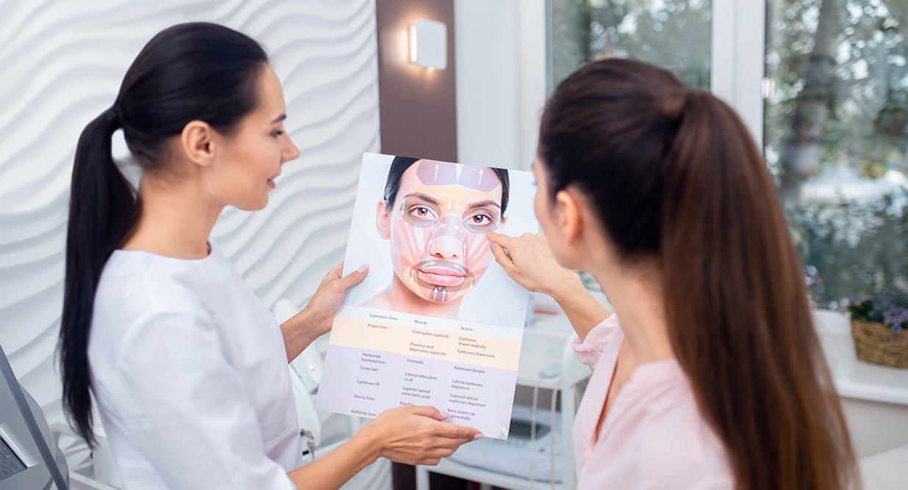

ทุกวันนี้มองไปทางไหน จะทำอะไรก็เจอแต่ป้ายโฆษนาเหล่าสกินแคร์ เมคอัพ หัตถการชะลอวัยมากมาย ไม่ว่าจะเป็นเซรั่มย้อนวัย ไนท์ครีมหน้าเด็ก หรือการฉีดโบท็อกเพื่อให้ผิวหน้าตึงไม่เหี่ยวย่น สิ่งเหล่านี้ทำให้ปฎิเสธไม่ได้เลยว่าการย้อนวัยเป็นเรื่องที่ใครๆ ต่างต้องการโดยเแพาะกับผู้ที่ผ่านโลกมามากจนใบหน้าเปลี่ยนไปจากเดิม แต่หลายคนอาจจะยังไม่เคยได้ยินเกี่ยวกับศัลยกรรมยกกระชับมาก่อน เพราะบอกเลยว่าจะหัตถการไหนๆ สกินแคร์อะไรก็ทำไม่ได้อย่างการยกกระชับชะลอวัยแน่นอน
ศัลยกรรมยกกระชับเป็นการผ่าตัดเพื่อปรับรูปทรงและยกกระชับผิวที่หย่อนคล้อยให้กลับมาดูอ่อนเยาว์และกระชับขึ้น เหมาะสำหรับผู้ที่มีปัญหาผิวหย่อนคล้อยบริเวณใบหน้าและลำคอ โดยไม่จำกัดเพศหรืออายุปัจจัยที่ควรพิจารณาในการเลือกทำศัลยกรรมยกกระชับนั้นมีด้วยกันหลักๆที่แนะนำว่าควรพิจารณาปัจจัยต่อไปนี้
ทำความรู้จักกับประเภทของศัลยกรรมยกกระชับ
ในปัจจุบัน ศัลยกรรมยกกระชับมีหลายประเภท ขึ้นอยู่กับบริเวณที่ต้องการยกกระชับ ดังนี้
ข้อดีและข้อเสียของการทำศัลยกรรมยกกระชับ
ข้อดี
ข้อเสีย
นอกจากนี้สำหรับการเตรียมตัวก่อนทำศัลยกรรมยกกระชับ แนะนำว่าควรปรึกษาแพทย์เพื่อประเมินสภาพผิวและวางแผนการผ่าตัดที่เหมาะสม นอกจากนี้ ควรงดสูบบุหรี่และดื่มแอลกอฮอล์อย่างน้อย 2 สัปดาห์ก่อนการผ่าตัด
ศัลยกรรมยกกระชับเป็นการผ่าตัดที่สามารถช่วยแก้ปัญหาผิวหย่อนคล้อยให้ดูอ่อนเยาว์และกระชับขึ้นได้ อย่างไรก็ตาม ควรพิจารณาปัจจัยต่างๆ อย่างรอบคอบก่อนตัดสินใจทำการผ่าตัด เพื่อให้ได้ผลลัพธ์ที่ตรงตามความต้องการและปลอดภัย
เราได้รู้ส่วนสำคัญของการยกกระชับชะลอวัยไปแล้ว ต่อไปประเด็นสำคัญที่ควรรู้ไว้คือเคล้ดลับการ ดูแลผิวหนังหลังการยกกระชับ ดูแลอย่างไรให้มีความปลอดภัยและมีประสิทธิภาพที่สุด
การดูแลผิวหน้าหลังศัลยกรรมยกกระชับเป็นสิ่งสำคัญ เพื่อให้ผิวฟื้นตัวและได้ผลลัพธ์ที่ดียิ่งขึ้น ต่อไปนี้เป็นเคล็ดลับดูแลผิวหน้าหลังศัลยกรรมยกกระชับ
ศัลยกรรมยกกระชับชะลอวัยสามารถช่วยคืนความอ่อนเยาว์แบบธรรมชาติให้กับใบหน้าได้ อย่างไรก็ตาม ควรพิจารณาปัจจัยต่างๆ อย่างรอบคอบก่อนตัดสินใจทำการผ่าตัด เพื่อให้ได้ผลลัพธ์ที่ตรงตามความต้องการและปลอดภัย